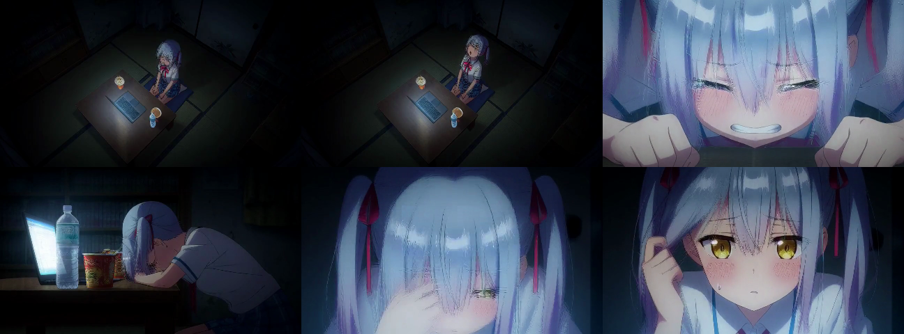
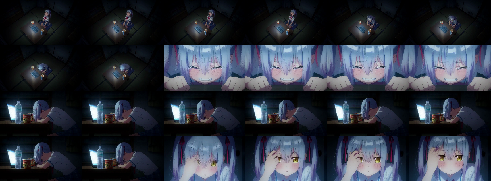
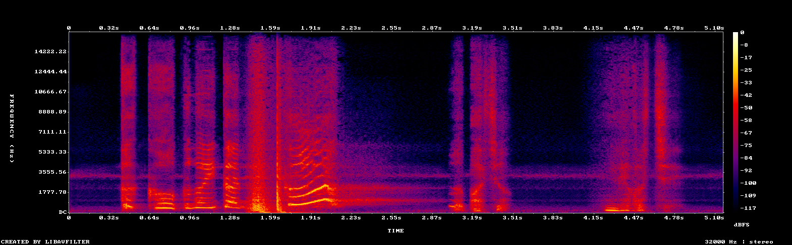
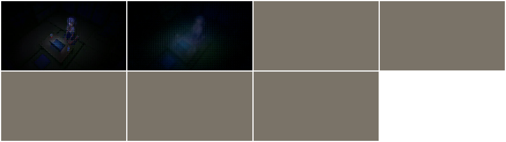

Apple M3 Pro · C graph/runtime with Metal kernels · 864×480 · 124 frames · Turbo 4 · 2026-08-16
| Field | Exact value |
|---|---|
| Prompt source | prompt.txt · 942 bytes · SHA-256 6cd3a19fef1f66204942a10211dcba136587e09c73c82f065311035e452c7ae0 |
| Prompt tokens | 240 |
| Geometry | 864×480, 124 frames, 24 fps; 5.166667 s video |
| Seed / sampler | 42 · Turbo v4-600 EMA · four model evaluations |
| H3 packed sequence | 15,639 rows: 240 text + 414 audio + 14,985 video |
| Execution artifact | Sawfwair/MiniMax-H3-FL2VA-MLX-4bit@e1244ad93d60c737c7e0f065a1c9372f3de7caf8, third-party derived from MiniMax-H3 Base |
| Precision | Q8 group-64 conditioner; affine-Q4 group-64 H3; BF16 residual state; FP32 accumulation; F16 Video VAE with FP32 boundaries; F32 Audio VAE |
| Final output | minimax-h3.mp4 · 868,388 bytes · SHA-256 5736387060ef3d7e0541609320fe591f04f6c4e03fe4c5cb67c2b95fd5fa7acc |
| Raw records | runtime JSON · benchmark JSON · verification JSON |
日系二次元动漫风格，四镜头连贯视频：
【镜头1】：全景俯视，深夜昏暗简陋的房间里，冰蓝色双马尾少女坐在榻榻米上，无精打采地仰头打哈欠叹气，面前桌上放着发光的笔记本电脑和吃剩的杯面，影院级暗调光影。
【镜头2】：镜头快速切至面部极特写，少女眼含泪水，金黄色眼睛，脸颊红晕，咬着牙表现出委屈又倔强的神情，双手趴在桌上，剧烈的破防动态画面。
【镜头3】：侧面中景，疲惫的蓝发少女无精打采地趴在木桌上，身旁是发光的电脑屏幕、水瓶和杯面，阴暗沉重的室内环境，极微弱的呼吸动作。
【镜头4】：正面特写，少女慢慢抬起头，抬手将鬓角头发撩到耳后，眼神空洞地注视前方，脸颊挂着一滴汗珠，屏幕冷光照亮面部，细腻的手部与面部动作。
画幅 16:9，高清细节，影院级光影
All model images were local cache hits. Inference performed no network access. Timing ends at the original mux. Section 3 probing, full decode, hashes, statistics and image generation are excluded.
| Stage | Seconds | Runtime share | Boundary |
|---|---|---|---|
| Tokenizer | 0.009321 | <0.001% | Original UTF-8 prompt → 240 IDs |
| Text image access | 4.784617 | 0.051% | Complete local 28.22 GB safetensors image |
| 50-layer text conditioner | 4.713666 | 0.051% | Streamed affine-Q8 layers |
| Turbo AdaLN compile | 0.865239 | 0.009% | Four fixed evaluations |
| H3 denoise | 1,881.824388 | 20.246% | 50 blocks × four exact dense evaluations |
| Video VAE decode | 7,387.292038 | 79.477% | 7 temporal chunks × 15 serial spatial tiles × 36 layers |
| Audio VAE decode | 13.531083 | 0.146% | 165,333 samples/channel |
| H.264/AAC mux | 0.600629 | 0.006% | Final synchronized MP4 |
| Other measured runtime | 1.248762 | 0.013% | Allocation, Euler updates and stage transitions |
| Runtime total | 9,294.869743 | 100% | 2 h 34 min 54.870 s |
Outer /usr/bin/time wall | 9,295.01 | — | Wrapper precision is 0.01 s |
| Kernel group | 200-call subtotal | Mean per layer/evaluation |
|---|---|---|
| QKV and output projections | 248.612050 s | 1,243.060 ms |
| Exact dense attention | 1,126.361167 s | 5,631.806 ms |
| MLP | 495.999489 s | 2,479.997 ms |
| Metric | Measured value | Scope |
|---|---|---|
| Runtime CPU user / system | 12.160168 / 40.497675 s | C/Metal process; GPU execution is not counted as CPU time |
| Outer process-tree CPU user / system | 14.49 / 40.67 s | Includes media child processes |
| Runtime peak physical footprint | 4,429,110,144 bytes | 4.125 GiB, measured in process |
| Outer peak physical footprint | 4,479,572,864 bytes | 4.172 GiB, reported by /usr/bin/time -lp |
| Maximum resident set | 1,714,831,360 bytes | 1.597 GiB; does not replace physical-footprint accounting |
| Page faults / swaps | 1,059,931 / 0 | System swap sampled after the run was also 0 bytes |
| Thermal / performance warning | none / none | pmset -g therm after the run |
| Check | Observed result | Status |
|---|---|---|
| Complete media decode | Final MP4 decoded without ffmpeg errors | PASS |
| Video stream | H.264, 864×480, 24 fps, 124 declared and 124 decoded frames, 5.166667 s | PASS |
| Flat-frame check | 0/124 flat; per-frame luma range 181–233 | PASS |
| Motion | 123 adjacent differences; mean luma difference 4.495795 | NON-STATIC |
| Four-shot structure | Scene changes at 1.541667, 2.583333 and 3.916667 s | PASS |
| Spatial tiles | No seam observed in full-resolution sampled frames | PASS |
| Temporal chunks | No break observed across sampled 17-frame boundaries | PASS |
| Audio | 32 kHz stereo; 165,333 samples/channel; peak −6.205 dBFS; RMS −29.355 dBFS; non-silent | STRUCTURAL PASS |
| Visual prompt response | Blue twin-tail girl, dark room, low table, laptop, bottle/cup food, distressed close-up, collapsed side view and final front close-up are visible | PASS |
| Audio semantic review | No listening review was performed | OPEN |
| Official full-precision parity | No same-prompt official reference was generated | OPEN |



The first 480p attempt decoded all 37 video latents as one sequence. It produced 38 non-flat frames followed by 86 flat gray frames. The corrected path follows the released decoder's seven-latent temporal tasks, five-latent stride and five-frame overlap.
| Run | Total | Video VAE | Peak footprint | Output |
|---|---|---|---|---|
| Before temporal chunking | 7,249.519 s | 5,342.026 s | 6,733,682,496 bytes | 86 flat frames; quality fail |
| Correct seven-chunk path | 9,294.870 s | 7,387.292 s | 4,429,110,144 bytes | 0 flat frames; four coherent shots |

| Record | Device / precision | Workload | Time | Conclusion |
|---|---|---|---|---|
| This corrected C/Metal run | M3 Pro; Q8/Q4 mixed precision | 864×480×124; 240 text rows; 15,639 packed rows | 9,294.870 s | Speed target not met |
| MacOS-H3-Speedrun front-page sample | Per-file device/peak-memory record not attached | 832×480×124; different prompt; Turbo v4 + SolAttn + staged | 192 s | This run is 48.411× slower; not an equivalent-run quality ratio |
| MacOS-H3-Speedrun attention record | M3 Ultra; BF16 | 864×480×124; 15,485 packed rows; kernel only | 59.53 ms/call | This dense baseline averages 5,631.806 ms/call; device, rows and algorithm differ |
The repository's 49.893 ms tree-attention primitive is a synthetic approximate-route result. It was not enabled in this run because real-weight trajectory quality is still open.
| Order | Change | Reason from this run | Required gate |
|---|---|---|---|
| 1 | Batch same-shaped Video VAE tiles | Serial Video VAE is 79.477% of runtime | Pixel/frame differential plus the same seam and temporal-boundary review |
| 2 | Integrate tree attention behind a dense fallback | Dense attention is 1,126.361 s across 200 calls | Per-layer error, fixed-seed trajectory and final media comparison |
| 3 | Validate sparse projection/MLP schedules | Dense QKV/output + MLP consume 744.612 s | Real-weight layer and four-evaluation trajectory quality |
make minimax-h3-m3-e2e h3_prompt_text=$(cat models/minimax-h3/targets/apple-m3-pro/artifacts/anime-room-864x480-turbo4/prompt.txt) MINIMAX_H3_TEXT_ENCODER_URL="file://$PWD/tmp/minimax-h3-text-encoder.safetensors" \ MINIMAX_H3_TURBO_ADAPTER="file://$PWD/tmp/minimax_h3_turbo_v4_step600_ema.safetensors" \ /usr/bin/time -lp build/minimax-h3-m3-e2e "$h3_prompt_text" \ models/minimax-h3/targets/apple-m3-pro/artifacts/anime-room-864x480-turbo4 \ 864 480 124 42
The deployed inference binary is compiled without libcurl and does not launch Python, PyTorch, MLX, GGML, llama.cpp, ONNX Runtime or ComfyUI. It uses ffmpeg only for final H.264/AAC output.